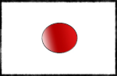

닮은강아지찾아보기
Home
어플다운로드
문의사항
한국어
日本語
닮은 강아지는??
인공지능으로 찾아보는 닮은강아지
클릭해서 사진을 업로드 해주세요
Loading...
AI가 닮은 멍멍이를 찾고있습니다~
다른 사진으로 하기
Please enable JavaScript to view the
comments powered by Disqus.


 한국어
한국어